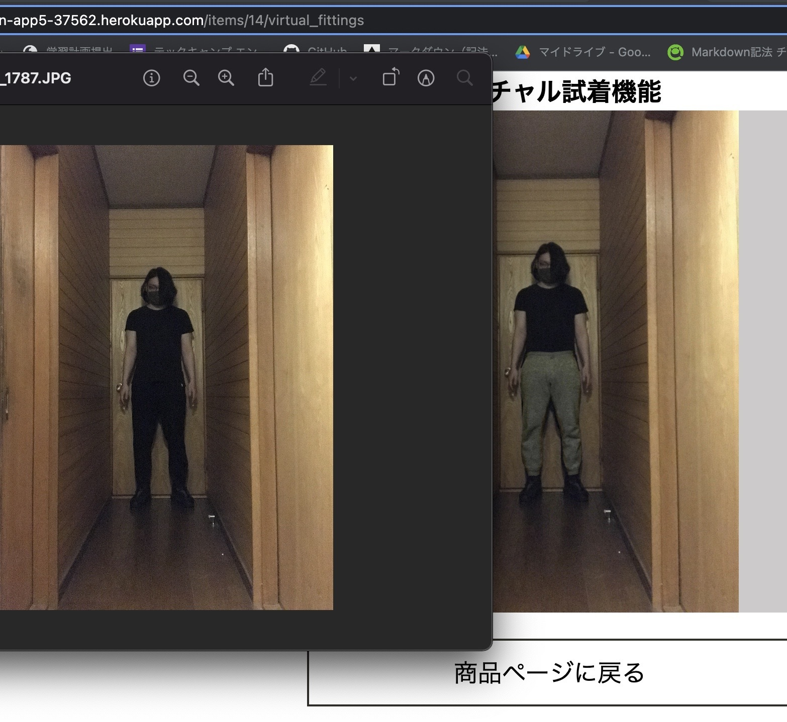

Baton（せどり副業アプリ）
開発環境
Ruby / Ruby on Rails / MySQL / GitHub / Heroku / Visual Studio Code / Trello
-
概要
制作時間 70時間 URL https://baton-app5-37562.herokuapp.com/ ID admin PASS 2222 -
テスト用アカウント
管理者ユーザー
mail aaaa@aaaa PASS aaa111 可能なアクション 買付用商品出品 バイヤーユーザー
mail bbbb@bbbb PASS bbb111 可能なアクション 買付用商品購入、商品出品 カスタマーユーザー
mail cccc@cccc PASS ccc111 可能なアクション 商品購入,バーチャル試着
OUTLINEアプリケーションの概要
オリジナルアプリケーションとして、廃棄前の洋服を販売することで、廃棄となる洋服を減らす事ができ、副業もでき、バーチャル試着を出来るアプリを開発しました。
主な機能は、ユーザー登録機能（管理者ユーザー、バイヤーユーザー、カスタマーユーザーの3種類）、商品買付機能および商品出品機能、商品購入機能、バーチャル試着機能です。
■管理者ユーザー ※フッターからログイン
管理者ユーザーは廃棄前の洋服を集め、販売している企業という設定
バイヤーユーザーに対して卸値でバイヤーユーザーに洋服を販売し、販売した商品がカスタマーユーザーに売れた際の手数料を受け取る
・フッターからユーザー登録 → ユーザー名をクリック → マイページに遷移
・マイページorトップページ → 右下のカメラマーク → 買付用商品の出品。
■バイヤーユーザー ※ヘッターからログイン
バイヤーユーザーは管理者ユーザーから卸値で商品を購入する、その商品を出品する。販売価格から卸値と手数料を引いた額を収入として受け取る
・ヘッターからユーザー登録 → ユーザー名をクリック → マイページに遷移。マイページorトップページ → 左下のカメラマーク → 商品出品
・バイヤーユーザーでログイン → トップページに買付用商品一覧 → 買付用商品をクリック → 詳細ページに遷移 → 買付用商品の購入
■カスタマーユーザー ※ヘッターからログイン
カスタマーユーザーはバイヤーユーザーから商品を購入する
・ヘッターからユーザー登録 → ユーザー名をクリック → マイページ
・商品一覧 → 商品をクリック → 商品詳細ページに遷移 → 商品購入
・商品詳細ページに遷移 → バーチャルフィッティングボタンをクリック → ユーザー登録時登録したユーザー画像とアイテム画像が合成されて表示される。
-
開発に至った経緯
前職で、アパレル企業で働いていた事からアパレル業界の知識を知る機会が多く、世の中で流通している洋服のうち50%の洋服が廃棄されているという現状を知りました。
そして、そんな廃棄される洋服を買い付けて、実店舗にて販売をしているベンチャー企業があるという事を知りました。
そこでもし、自身がそのベンチャー企業の経営者であるならば、どのようにすれば廃棄になる洋服を減らせるかどうか考え、 かつこの不況の中、ITの力で人助けもできればいいと思いこのアプリを作りました。
-
開発で工夫したこと
一つ目が本アプリケーションのポイントであるバーチャル試着機能です、画像の合成にはImage magicを使用し画像を読み込み、合成しています。アイフォンから撮った写真をそのまま登録しても画像データに含まれるデータによる不具合が出ないように工夫しました。
また、試着用の画像登録を管理者ユーザーが出品時登録した時のみにすることで、よりバイヤーユーザーが手軽に出品を行えるようにしています。
いずれも、知人7名ほどに実際に利用してもらい、ユーザーヒアリングを行いながら改善を行っています。
-
今後実装したいと思っていること

swiftを学び、携帯の試着用画像撮影アプリを作成しようと思っています。
理由としては、バーチャル試着機能で使ってる画像合成は、アイテム画像の形にユーザー側が合わせて撮影しなければならない仕様のためです。
なので手軽に写真撮影を行えるように撮影時に簡単にアイテム画像に撮影できるアプリ（撮影時人型のグリッド線を画面上に表示させる等）を作る必要があります。その他基本機能、お気に入りやフォロー機能、いいね機能、検索機能等、フリマアプリによくあるような機能を追加していきたいと考えています